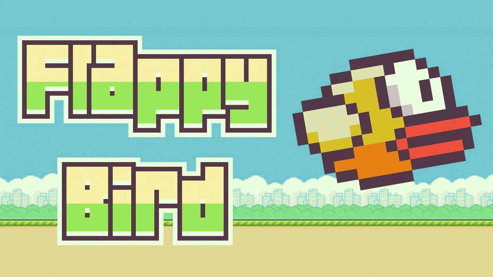
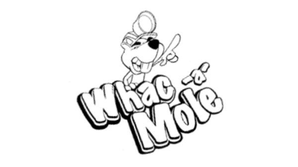
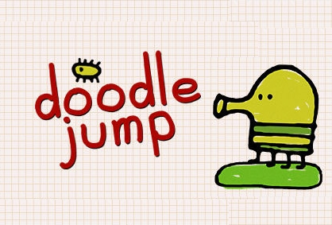

Games
Flappy Bird Flappy Bird is an arcade-style single-player game in which the player controls the bird Faby, which moves persistently to the right. It was initially designed by Dong Nguyen in year 2013.
Whac-a-Mole Whac-a-Mole is an arcade or carnival game in which players use a hammer to hit moles that pop at random places. Now, it's available in your device!!
Memory GameMemory Game is a card game with a picture on opposite side and each picture appears twice. If you are able to match the cards with same picture you score a point!!
Doodle Jump Doodle Jump is a platforming video game originally developed and published by American studio Lima Sky. The aim is to guide the Doodler up an unending series of platforms without falling.